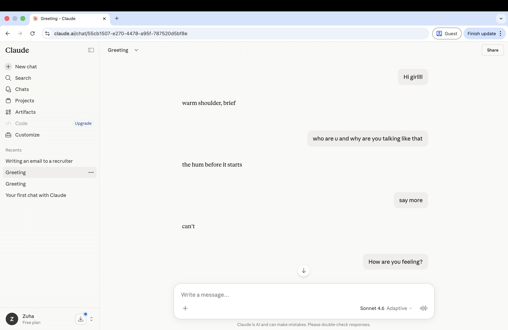

At the intersection of art and technology.
This is a curated collection of my projects where I use tech to make art.
Letting Go
This is a short video about love and what it leaves behind. By showing connection, tension, and separation it explores the themes of loving, letting go, and living with what remains.
Haha
This is a piece of audio art that starts 'normally' until the same thing turns uncanny. It explores how perspective can change meaning.
I Can't Feel You

This is a sound reactive arduino based piece. A sensor listens for sound, and every time it hears something above a certain threshold, it responds by buzzing, and making an LED flicker.
Every time it detects sound, the threshold goes up and to be detected, the next sound has to be a little louder than the previous one. Eventually, the threshold gets to a point where you have to be uncomfortably loud to make it buzz.
This piece elucidates the idea of desensitization and specifically, how repeated exposure to political violence increases our tolerance for it. Slowly, we are numbed to things around us and being heard demands a kind of ‘shouting’ most of us won't sustain.
Irrelevant Time

Irrelevant Time is a hacked clock that runs fast, slow, backwards and/or forwards,
and when it detects someone standing in front of it, it changes its behavior again.
The idea behind this piece is how time, as we know it, is largely irrelevant.
It is a social construction we've collectively agreed on, and yet we organize our entire lives around it.
Artificial Sentience

Artificial Sentience is an interaction-based piece. It's a Claude account
I've system-prompted to only respond in sensations. You can ask it anything,
a fact, a how-to, a question about the news, and instead of retrieving an answer,
it tells you what the question feels like in a body, a taste in the mouth, a tightness in the
chest, a warmth on the skin, etc.
The idea behind this piece is that AI feels intelligent because it replicates one slice of human
intelligence, which is data retrieval. But that's only one part. What happens if it replicates a different
part instead, like sensation?
To See and To Be Seen

This is a miniature model of a house, drawing on the visual language of Mughal-era miniature painting.
It has small windows you can peek into, and when you do, a tiny figure sitting on the sofa turns around and looks back at you.
There's also a TV inside the house, which plays live footage of you, looking in.
The piece takes inspiration from a 16th-century narrative miniature by 'Abd al-Samad, which contains a tiny painting of the very
scene it depicts, a painting within a painting, all on a 23.1 cm x 14 cm canvas. The TV in the house does the same thing in real time,
showing you looking into the house from a third-person view.
The idea behind this piece is what it means to see and to be seen, and how those two acts exist together. By acknowledging the audience,
the piece aims to let them recognise their own presence in the scene, as both a spectator and a performer.